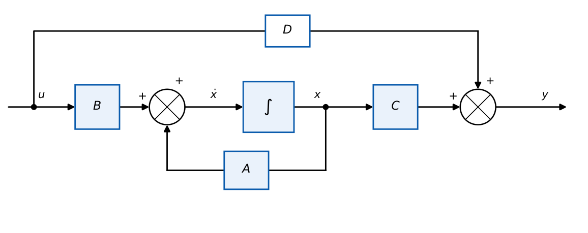

State Variables and State-Space Models
In this chapter
Write a state model from a differential equation or circuit; obtain \(G(s)=C(sI-A)^{-1}B+D\); canonical forms; eigenvalues as poles. 1-mark and 2-mark items appear regularly.
19.1 Core concept
The state of a system at \(t_0\) is the smallest set of variables whose values, together with the input for \(t\ge t_0\), determine the future behaviour. The number of state variables \(n\) equals the order of the system. The state vector \(x(t)\in\mathbb R^n\) lives in state space.
State equation: \(\dot x=Ax+Bu\); output equation: \(y=Cx+Du\).
\(A\): \(n\times n\) system matrix; \(B\): \(n\times r\) input matrix; \(C\): \(p\times n\) output matrix; \(D\): \(p\times r\) feed-forward matrix.

19.2 Transfer function from the state model
Laplace transform with \(x(0)=0\): \(sX=AX+BU\Rightarrow X=(sI-A)^{-1}BU\); \(Y=CX+DU=[C(sI-A)^{-1}B+D]U\).
- \((sI-A)^{-1}=\dfrac{\mathrm{adj}(sI-A)}{|sI-A|}\): characteristic equation \(|sI-A|=0\); its roots are the eigenvalues of \(A\) and the poles of \(G(s)\) (unless cancelled).
- Stability: all eigenvalues of \(A\) in the open LHP.
- The state model is not unique: any \(\bar x=Tx\) (nonsingular \(T\)) gives \(\bar A=TAT^{-1}\), \(\bar B=TB\), \(\bar C=CT^{-1}\) with the same \(G(s)\) and same eigenvalues.
19.3 From a differential equation
For \(\dddot y+a_2\ddot y+a_1\dot y+a_0y=b_0u\) (no derivatives of \(u\)), choose the phase variables \(x_1=y\), \(x_2=\dot y\), \(x_3=\ddot y\).
\(A=\begin{bmatrix}0&1&0\\0&0&1\\-a_0&-a_1&-a_2\end{bmatrix}\), \(B=\begin{bmatrix}0\\0\\1\end{bmatrix}\), \(C=[\,b_0\ \ b_1\ \ b_2\,]\), \(D=0\).
Observable canonical form (OCF): \(A=\begin{bmatrix}0&0&-a_0\\1&0&-a_1\\0&1&-a_2\end{bmatrix}\), \(B=\begin{bmatrix}b_0\\b_1\\b_2\end{bmatrix}\), \(C=[\,0\ \ 0\ \ 1\,]\).
OCF is the transpose (dual) of CCF: \(A_o=A_c^T\), \(B_o=C_c^T\), \(C_o=B_c^T\).
The last row of \(A\) in CCF contains the negative characteristic-polynomial coefficients (companion matrix). Diagonal (modal) form. For distinct poles \(p_i\) with \(G=\sum\dfrac{r_i}{s-p_i}\): \(A=\mathrm{diag}(p_i)\), \(B=[1\ \dots\ 1]^T\), \(C=[r_1\ \dots\ r_n]\). For repeated poles use the Jordan form (blocks with \(1\)s above the diagonal).
19.4 Physical systems
States \(x_1=v_C\), \(x_2=i_L\); input \(v_s\); output \(v_C\): \(\dot x_1=\dfrac{x_2}{C}\), \(\dot x_2=\dfrac{v_s-Rx_2-x_1}{L}\). \[ A=\begin{bmatrix}0&\tfrac1C\\-\tfrac1L&-\tfrac RL\end{bmatrix},\ B=\begin{bmatrix}0\\\tfrac1L\end{bmatrix},\ C=[1\ 0].\quad |sI-A|=s^2+\tfrac RLs+\tfrac1{LC}. \]
\(x_1=x\), \(x_2=\dot x\): \(A=\begin{bmatrix}0&1\\-K/M&-B/M\end{bmatrix}\), \(B=\begin{bmatrix}0\\1/M\end{bmatrix}\), \(C=[1\ 0]\).
\(x_1=i_a\), \(x_2=\omega\): \(\dot x_1=-\dfrac{R_a}{L_a}x_1-\dfrac{K_b}{L_a}x_2+\dfrac1{L_a}v_a\), \(\dot x_2=\dfrac{K_t}{J}x_1-\dfrac bJx_2\). Adding \(x_3=\theta\) (\(\dot x_3=x_2\)) gives the position model.
\(A=\begin{bmatrix}0&1\\-2&-3\end{bmatrix}\), \(B=\begin{bmatrix}0\\1\end{bmatrix}\), \(C=[1\ 0]\): \((sI-A)^{-1}=\dfrac1{s^2+3s+2}\begin{bmatrix}s+3&1\\-2&s\end{bmatrix}\), so \(G=C(sI-A)^{-1}B=\dfrac{1}{(s+1)(s+2)}\). Eigenvalues \(-1,-2\).
\(G=\dfrac{2s+5}{s^3+4s^2+6s+3}\): \(A=\begin{bmatrix}0&1&0\\0&0&1\\-3&-6&-4\end{bmatrix}\), \(B=\begin{bmatrix}0\\0\\1\end{bmatrix}\), \(C=[5\ \ 2\ \ 0]\).
For \(G=\dfrac{s+3}{s^2+3s+2}\) in CCF: \(C=[3\ \ 1]\). The output combines \(x\) and \(\dot x\) (zeros of \(G\) come from \(C\), poles from \(A\)).
19.5 Physical interpretation
State variables usually correspond to energy-storage elements (capacitor voltage, inductor current, velocity, position). The state model describes internal behaviour (including hidden modes) whereas \(G(s)\) describes only the input–output map. It handles MIMO, time-varying and nonlinear systems naturally, and is the basis of modern control (state feedback, observers).
Poles: \(|sI-A|=0\). CCF: read \(a_i\) from the last row; \(C\) holds numerator coefficients (lowest order first). \(\mathrm{tr}(A)=\sum\) eigenvalues, \(\det A=\prod\) eigenvalues. For \(2\times2\): \(\lambda^2-\mathrm{tr}(A)\lambda+\det A=0\).
(i) Number of states \(=\) order of the minimal realisation, not necessarily the degree of the denominator (cancellations). (ii) The eigenvalues of \(A\) depend only on \(A\), not on \(B\), \(C\). (iii) In CCF the first row is \([0\ 1\ 0]\) (chain of integrators); in OCF the columns carry \(-a_i\). (iv) \(D\ne0\) only when relative degree is \(0\).
Q1. The poles of a system are the (A) eigenvalues of \(B\) (B) eigenvalues of \(A\) (C) rank of \(C\) (D) entries of \(D\).
Q2. For \(\dot x=Ax+Bu\), \(y=Cx\), \(G(s)=\) (A) \(C(sI+A)^{-1}B\) (B) \(C(sI-A)^{-1}B\) (C) \((sI-A)^{-1}\) (D) \(B(sI-A)^{-1}C\).
Q3. A second-order system has (A) 1 (B) 2 (C) 3 (D) 4 state variables (minimal).
Answers: Q1 (B). Q2 (B). Q3 (B).
Q4. \(A=\begin{bmatrix}-1&0\\0&-3\end{bmatrix}\), \(B=\begin{bmatrix}1\\1\end{bmatrix}\), \(C=[1\ \ 1]\). \(G(s)=\) (A) \(\dfrac{2s+4}{(s+1)(s+3)}\) (B) \(\dfrac{2}{(s+1)(s+3)}\) (C) \(\dfrac{s+4}{(s+1)(s+3)}\) (D) \(\dfrac{1}{s+1}\).
Q5. For \(\ddot y+5\dot y+6y=u\), a valid state matrix with \(x_1=y\), \(x_2=\dot y\) is (A) \(\begin{bmatrix}0&1\\-6&-5\end{bmatrix}\) (B) \(\begin{bmatrix}0&1\\-5&-6\end{bmatrix}\) (C) \(\begin{bmatrix}0&-1\\6&5\end{bmatrix}\) (D) \(\begin{bmatrix}-6&-5\\1&0\end{bmatrix}\).
Answers: Q4 (A): \(\dfrac1{s+1}+\dfrac1{s+3}=\dfrac{2s+4}{(s+1)(s+3)}\). Q5 (A).
Q6. \(A=\begin{bmatrix}0&1\\-4&-4\end{bmatrix}\): the sum of the eigenvalues is and their product is .
Q7. For \(A=\begin{bmatrix}0&1\\-25&-10\end{bmatrix}\), \(\omega_n=\) and \(\zeta=\) .
Answers: Q6: \(-4\) and \(4\) (double eigenvalue \(-2\)). Q7: \(\lambda^2+10\lambda+25\): \(\omega_n=5\), \(\zeta=1\).
Q8. Statements true for state models: (A) representation is not unique (B) \(G(s)\) is invariant under similarity transformation (C) eigenvalues of \(A\) change under \(T\) (D) MIMO systems can be modelled.
Answers: Q8: (A), (B), (D).
Given \(A=\begin{bmatrix}0&1\\-2&-3\end{bmatrix}\), \(B=\begin{bmatrix}0\\1\end{bmatrix}\), \(C=[1\ 1]\): \(G=C(sI-A)^{-1}B=\dfrac{1+s}{s^2+3s+2}=\dfrac1{s+2}\): the pole at \(-1\) has cancelled with the zero: a non-minimal realisation (see Chapter 21: unobservable mode).
T1. Write the state model of \(\ddot y+2\dot y+5y=3u\).
T2. Find the eigenvalues of \(A=\begin{bmatrix}-2&1\\0&-3\end{bmatrix}\).
Answers: T1: \(A=\begin{bmatrix}0&1\\-5&-2\end{bmatrix}\), \(B=\begin{bmatrix}0\\3\end{bmatrix}\), \(C=[1\ 0]\). T2: \(-2,-3\) (triangular).
- \(\dot x=Ax+Bu\), \(y=Cx+Du\); \(G=C(sI-A)^{-1}B+D\); poles \(=\mathrm{eig}(A)\).
- CCF: companion matrix, \(B=[0\ \dots\ 1]^T\), \(C=[b_0\ b_1\ \dots]\); OCF is the transpose.
- Similarity \(T\) preserves \(G\) and eigenvalues.
- States \(\leftrightarrow\) energy stores.